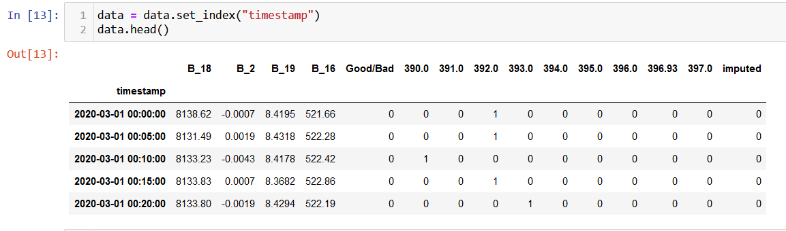
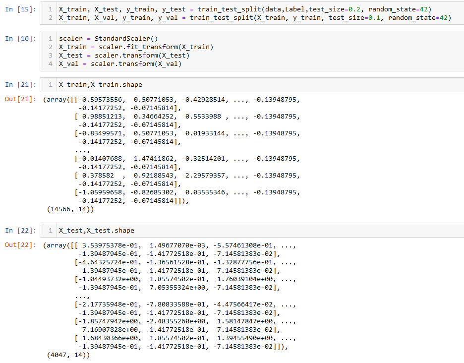
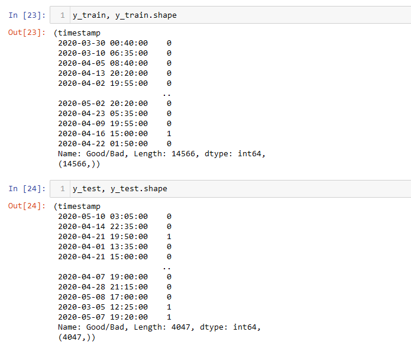
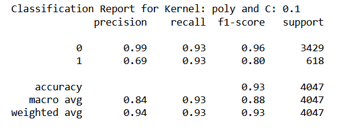
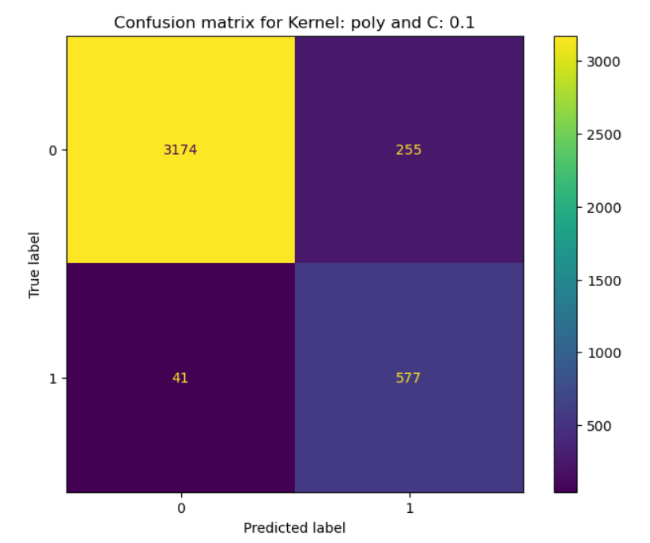
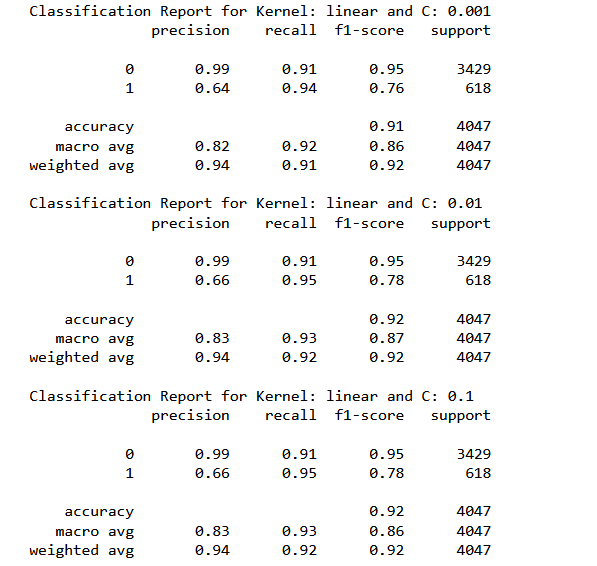
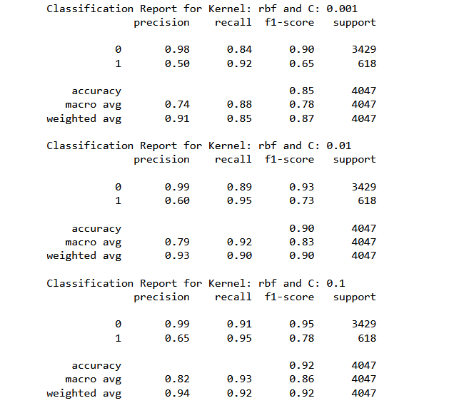

Support Vector Machines(SVM)
Introduction
SVM is a linear seperator, that is, it is a classifier that seperates two classes using a line/plane/hyperplane. What makes SVM special is that even though the data is not linearly seperable in the original dimensions, it can still seperate. Without actually projecting the data points into a higher dimension, it calculates the dot product of the input vector with itself in a higher dimension. This enables SVM to obtain a hyperplane that can seperate the data points in a higher dimension actually projecting them in a higher dimension.

Why Linear Seperators
SVMs are linear classifiers that find a hyperplane to separate data into different classes. They are efficient for linearly separable problems. However, the kernel trick can be used to map data to a higher-dimensional space where data can be linearly separable if not separable in the original feature space. This technique allows SVMs to handle complex data distributions that are not linearly separable. In summary, SVMs use linear separators and can be used with non-linear kernels to classify data.
Dot Products and kernels in SVM
- The dot product is crucial in SVMs for computing similarity between two high-dimensional data points.
- The kernel function allows the dot product to be calculated in the feature space instead of the coordinate space.
- Similarity between two data points in the feature space is determined by the dot product, with higher values indicating greater similarity.
- The kernel function enables the use of SVMs without directly computing coordinates, making it practical for high-dimensional feature spaces.
- SVMs can be used in cases where explicit computation of coordinates in feature space is impractical.

Polynomial Kernel over 2-D data
x is (x1, x2) and b is (b1, b2) [polynomial kernel= (xTb + r)^d]
Let r = 1 and let d = 2
(xTb + 1)2 = (xTb +1)(xTb +1) =
(xTb)(xTb) + 1/2aTb + 1/2xTb + 1 =
(xTb)(xTb) + xTb + 1 =
(x1b1 + x2b2)(x1b1+x2b2) + (x1b1 + x2b2) + 1 =
x1^2b1^2 + 2x1x2b1b2 + x2^2b2^2 + x1b1 + x2b2 + 1
Now let's see how to write dot product for it
[x1^2 , sqrt(2)x1x2, x2^2, x1, x2, 1] dot [b1^2 , sqrt(2)b1b2 , b2^2, b1, b2, 1]
Now - let's check the dot product we get directly from the kernel vs the dot product we
get after the transformation.
Let x = (1,2) and let b = (2,1)
where r = 1 and d = 2 so that K(x,b) = (xTb + 1)^2
If we plug in a and b directly we should get the dot product from the
transformed space!
((1, 2) dot (2, 1) + 1)^2 = (4 + 1)^2 =(5)^2 = 25
OK - what happens if we transform x and b first and then get the dot
product in the transformed space. It should be the same that is it should be
25.
Let r = 1 and let d = 2
(xb + 1)^2 = x1^2b1^2 + 2x1x2b1b2 + x2^2b2^2 + x1b1 + x2b2 + 1
and the dot product is:
[x1^2 , sqrt(2)x1x2, x2^2, x1, x2, 1] dot [b12 , sqrt(2)b1b2 , b2^2, b1, b2, 1]
Let x = (2,1) and let b = (1,2)
The transformation of x is
[x1^2 , sqrt(2)x1x2, x2^2, x1, x2, 1] -- > [4, sqrt(2)(2)(1), 1, 2, 1, 1]
The transformation of b is
[b1^2 , sqrt(2)b1b2 , b2^2, b1, b2, 1/2] -- > [1, sqrt(2)(1)(2), 4, 1, 2, 1]
Now - get the dot product
[4, sqrt(2)(2)(1), 1, 2, 1, 1] dot [1, sqrt(2)(1)(2), 4, 1, 2, 1]
= 25
Data Preparation


From the above image we can observe that the data is in numerical format. Apart from that, the data is split into splits using train_test_split function. This function splits the data randomly, where a specific percentage of data points are partitioned as training set and the rest as testing. From the training set, a small parition is seperated for validation. By default, this function chooses points without replacement.
Code
The code for classification tasks can be found HERE..
Here is the dataset used.
Results
Considering F-1 score as the metric of performance, SVM with polynomial kernel and C = 0.1 gave the best results. Best results refer to the ability to correctly predict the maintenance cycle. In other words, this classifier has the least number of false negatives and false positives combined. Here is the classification report and the cofusion matrix for this classifier:

Summary of rest of the classifiers with rbf and linear kernels:

Analyzing the above mentioned metric, we could observe that the kernels are not causing significant variations Even changing the regularization penalty within a kernel is not shifting the F1 score to a great extent.
Conclusions
The performance of SVM is similar to what we observed from decision trees and naive bayes. However, one of the SVM classifier performed very well in terms of reducing the number of false negatives to 28. This classifier had an rbf kernal and regularization parameter set as default.